同一地区，比较两个年代
唐、明两卷提供八个地图年份。iPad 宽屏、Mac 和 iPhone 横屏可左右并排，同步移动或分别取景；iPhone 竖屏可切换查看。保存两个时期的地图与自己的说明，分享一张对照卡片。
读到一座城、一条路，把它放回地图。选择唐、明两个时期，在同一视野中查看地点，再把自己的阅读整理成巡览。
2.0 已提交 App 审核。正式提供时间以 App Store 为准。
视频与截图展示需完整使用权限的功能。可以领取试用后体验。
唐、明两卷提供八个地图年份。iPad 宽屏、Mac 和 iPhone 横屏可左右并排，同步移动或分别取景；iPhone 竖屏可切换查看。保存两个时期的地图与自己的说明，分享一张对照卡片。
从资料、笔记或地图中选入地点和摘录，调整站点与说明，再加入年代对照。巡览保持可编辑，也能分享为可再次导入的文件；这项分享不导出视频。
明卷收录郑和下西洋航线、日本勘合贡道、琉球封贡航路，以及九边重镇与边墙注记。点开地点和线路，结合地形阅读其历史资料。
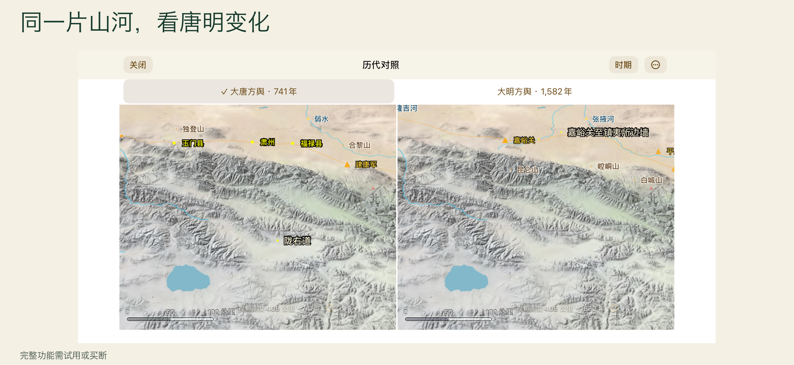
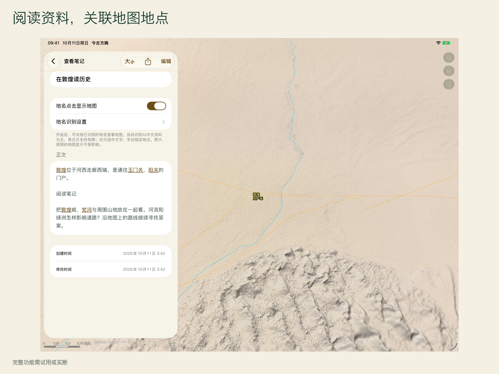
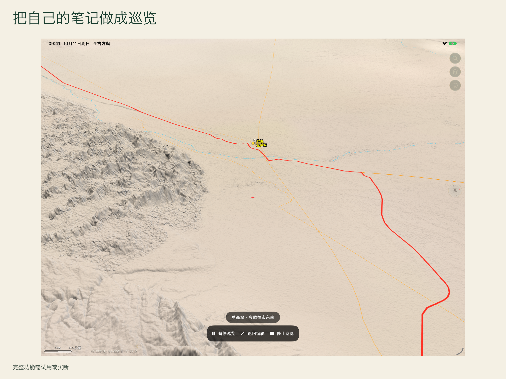
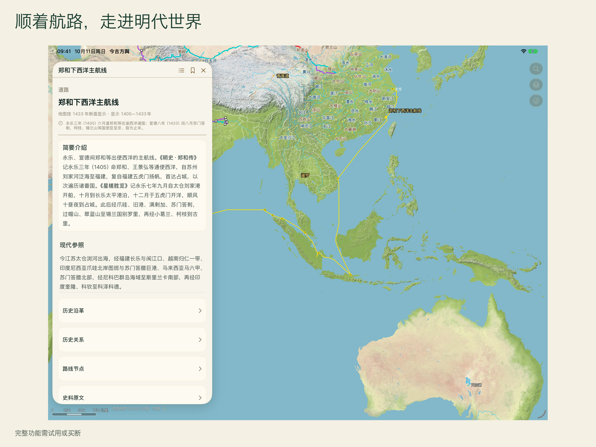
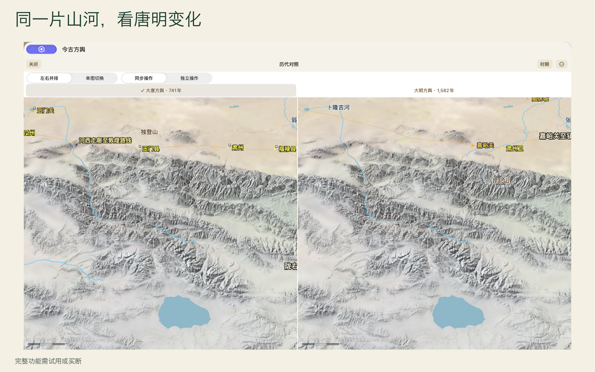
双图可比较两卷收录范围内的地区。整理好的地点关系和区域导读主要围绕关中、河西，另有唐明疆域界对照专题。
界面、地点名称与简介、内置专题导读提供简体中文、英语和日语。其他历史正文的语言覆盖因栏目而异，古籍引文保留原文。自动地名标注以中文资料为主，英日文支持有限，也可选中文字手动指定地点。
三维地形采用现代高程，供历史阅读参照。详细地形、Apple 地图和网页需要联网。个人笔记与附件保存在各自设备，可导出和分享，不会自动跨设备同步。
App 免费下载，可先阅读长安、潼关、洛阳三站导览。点击“免费体验七天”后，由 Apple 确认领取并开始计时，到期不自动扣款。完整功能一次买断，无订阅。早期付费下载用户保留完整权益。
在 App Store 查看Put the places you read about on a map. Compare Tang and Ming China in the same view, then turn your reading into a personal tour.
Version 2.0 has been submitted for App Review. Check the App Store for availability.
Videos and screenshots show features that require full access, available during the optional trial.
The Tang and Ming atlases offer eight map years. Compare them side by side on a wide iPad screen, Mac or landscape iPhone, with linked or independent movement. Portrait iPhone offers a single-map switch. Save both maps with your explanation as a comparison card.
Choose places and excerpts from documents, notes or the map. Arrange stops, edit explanations, and add comparisons between periods. Tours remain editable and can be shared as importable files. Tour sharing does not render a video.
The Ming atlas includes Zheng He's voyages, routes to Japan and Ryukyu, and frontier towns and walls. Open places and routes to read their historical material alongside the terrain.
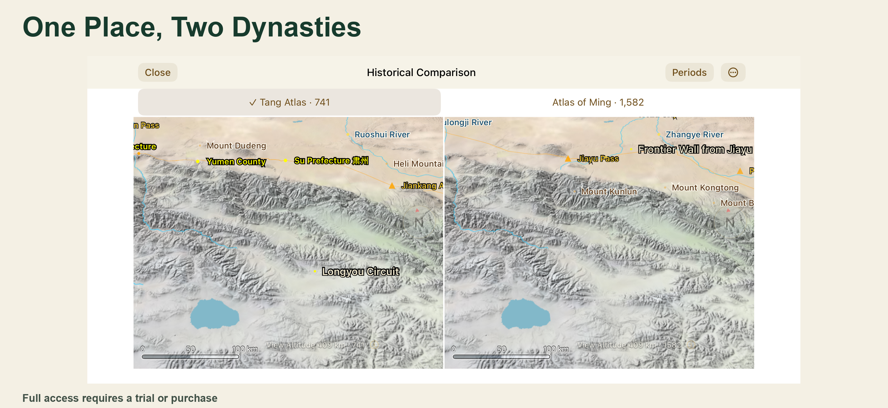
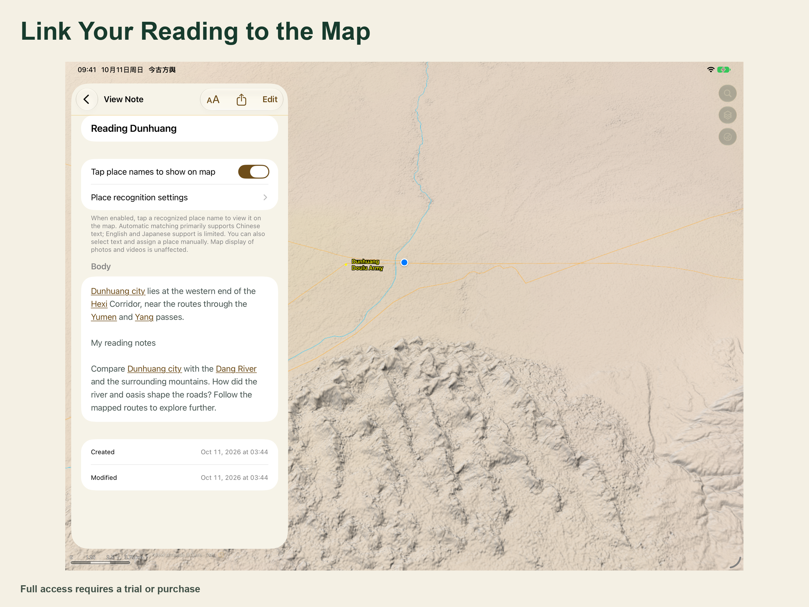
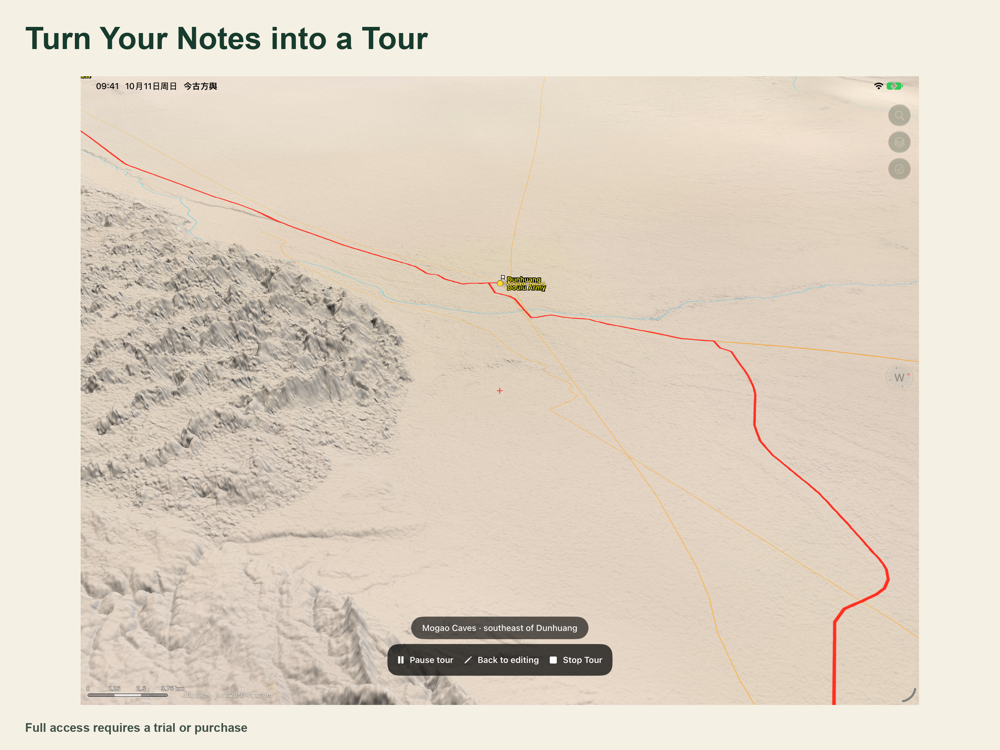
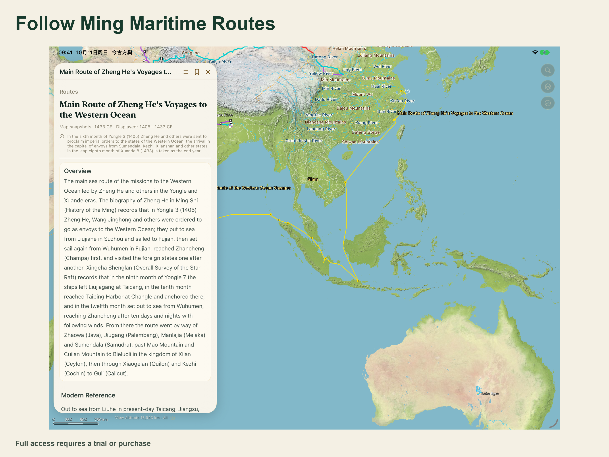
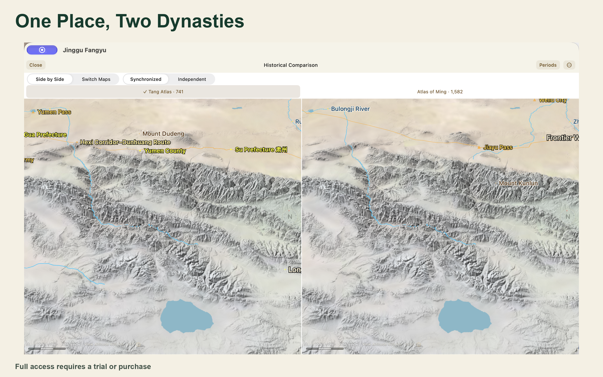
Map comparison covers the areas included in the two atlases. Prepared place relationships and regional guides focus on Guanzhong and Hexi, with a separate topic comparing Tang and Ming boundaries.
The interface, place names, summaries and built-in topic guides are available in Simplified Chinese, English and Japanese. Other historical text varies by section; classical quotations retain their original text. Automatic place recognition mainly serves Chinese text, with limited English and Japanese support. You can also select text and assign a place manually.
Terrain uses modern elevation as a reference for historical reading. Detailed terrain, Apple Maps and web content need a connection. Personal notes and attachments remain on each device, with export and sharing available. They do not automatically sync.
Download for free and read a three-stop guide to Chang'an, Tongguan and Luoyang. Claim the optional seven-day trial through Apple's confirmation sheet. Time starts from that claim, and there is no automatic charge when it ends. Full access is a one-time purchase with no subscription. Earlier paid-app customers retain full access.
View on the App Store本で読んだ町や道を、地図で確かめる。唐と明の二つの時期を同じ範囲で見比べ、読書の記録を自分の巡覧にまとめられます。
2.0 は App の審査に提出済みです。配信状況は App Store でご確認ください。
動画と画像には完全版の利用権が必要な機能を含みます。希望する方は試用で体験できます。
唐・明の二巻には八つの地図年代を収録。iPad の広い画面、Mac、横向きの iPhone では左右に並べ、連動または個別に操作できます。縦向きの iPhone では地図を切り替えて表示します。二つの地図と自分の説明を対照カードとして保存・共有できます。
資料、メモ、地図から場所や抜粋を選び、訪問地点と説明を編集して、時代の比較も加えられます。巡覧は編集を続けられ、再読み込みできるファイルとして共有できます。動画の書き出しではありません。
明巻には鄭和の航海、日本の勘合貿易路、琉球との封貢航路、九辺の重鎮や辺牆の注記を収録。場所やルートを開き、地形と一緒に歴史資料を読めます。
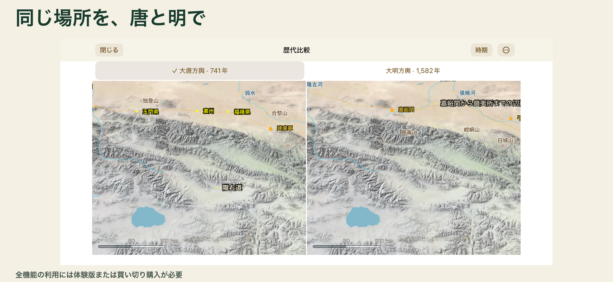
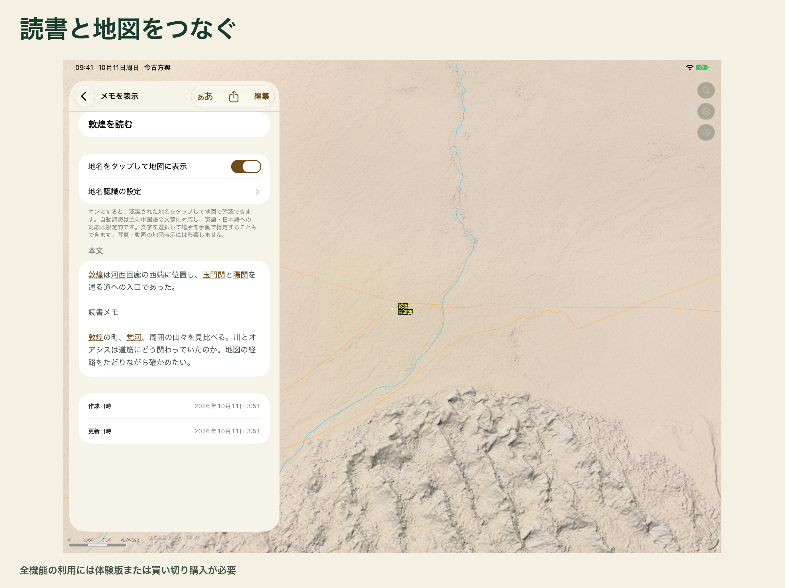
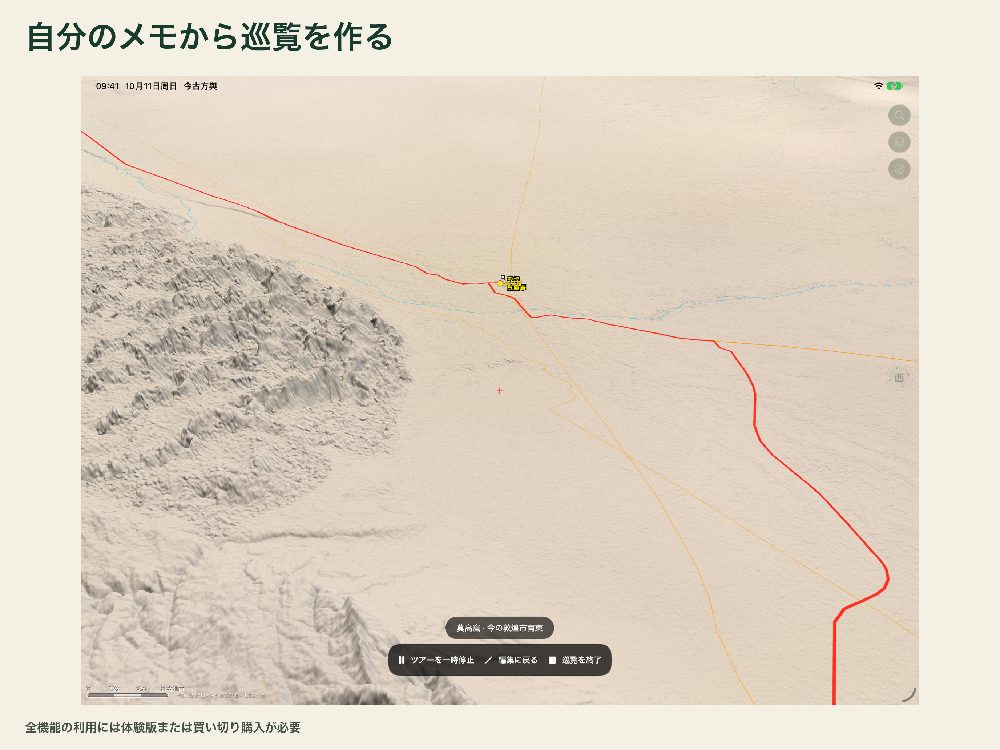
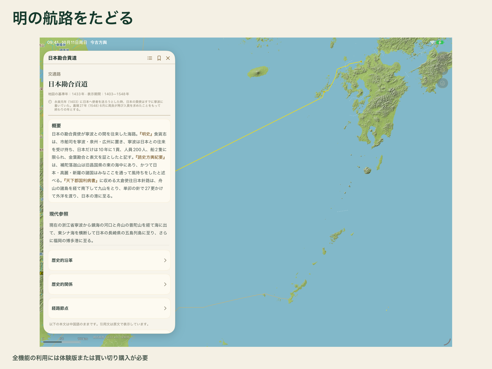
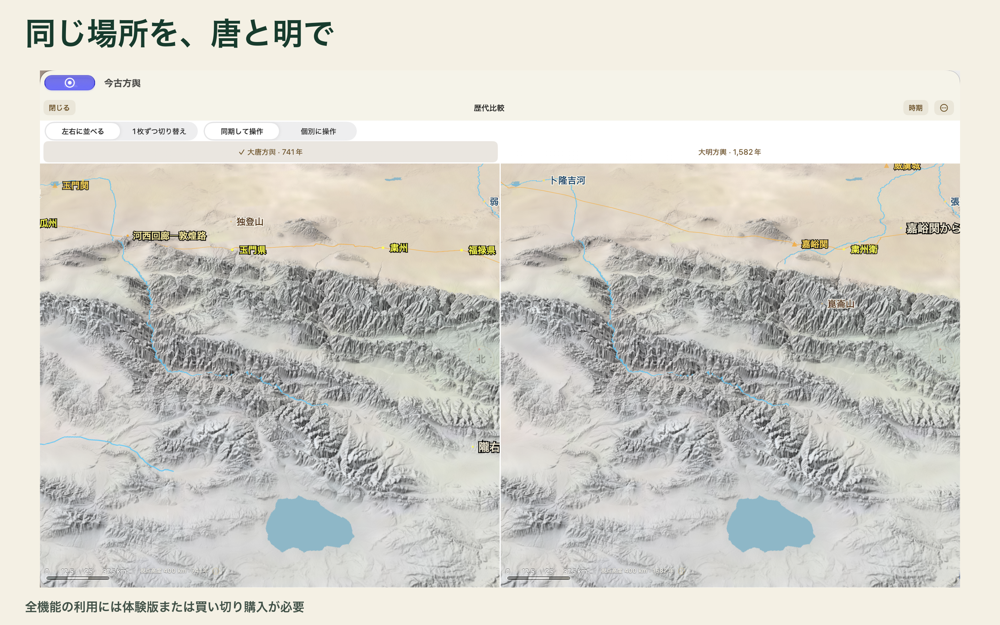
二つの地図で比較できる範囲は、唐・明の二巻に収録された地域です。整理済みの場所の関係や地域ガイドは関中・河西が中心で、唐明の境界を比較するテーマもあります。
画面、地名と概要、内蔵テーマの解説は簡体字中国語・英語・日本語に対応します。その他の歴史本文は欄によって言語の収録範囲が異なり、古典の引用は原文です。自動地名認識は中国語の資料が中心で、英語・日本語への対応は限定的です。文字を選んで手動で場所を指定することもできます。
地形は現在の標高に基づく、歴史を読むための参考情報です。詳細地形、Apple の地図、ウェブコンテンツには通信が必要です。個人のメモと添付資料は各端末に保存され、書き出しや共有ができます。端末間の自動同期はありません。
ダウンロードは無料で、長安・潼関・洛陽の3地点ガイドを読めます。希望する方は Apple の確認画面で7日間の試用を受け取れます。その時点から計時し、終了時に自動課金はされません。完全版は一度の購入で利用でき、サブスクリプションはありません。以前の有料版を購入した方は完全版の利用権を維持します。
App Store で見る